De investigación. Propuesto por Juan Bosco Romero Márquez, profesor colaborador de la Universidad de Valladolid Problema 318 18. Si en el triángulo ABC el ángulo A=60º , y llamamos O al punto de concurso de las rectas que unen los vértices A,B,C a los centros A´, B´, C´, de los triángulos equiláteros construidos exteriormente a los lados BC, CA, AB; demostrar que BO/ BB´ + CO/CC´= 1, BO/BB´: CO/CC´= AB/ AC, (BO/BB´)(CO/CC´) = (1/2) ( AO/AA´) Alba, L. de (1902) "Revista Trimestral de matemáticas", Año, II, N.5, Solución de José María Pedret, Ingeniero Naval. Esplugues de Llobregat (Barcelona). (4 de julio de 2006) |
|
SOLUCIÓN |
|
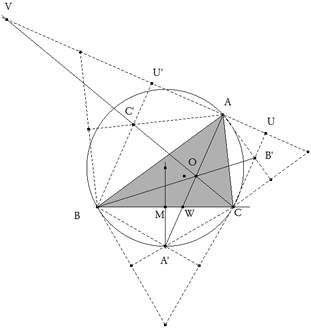 figura 1 PRIMERO Introduciendo que los triángulos sobre los lados son equiláteros, sus ángulos son de π/3 igual que A, tenemos
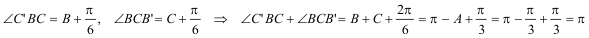 y también
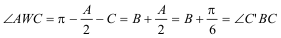 Es decir BC' y CB' son paralelas a AA' y en esas condiciones (ver figura)
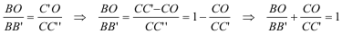 SEGUNDO Como el enunciado es para cualquier ángulo con A igual a π/3; por la construcción del ángulo capaz AA' es la bisectriz de A y por lo tanto W es el punto de corte de la bisectriz de A con su lado opuesto. Podemos aplicar el teorema de las bisectrices
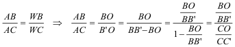 TERCERO Ahora con V como centro de homotecia (ver figura)
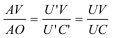 de lo que se deduce
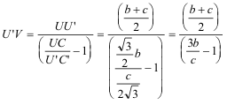 Y como
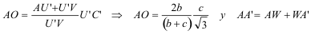 En cualquier libro elemental encontramos que
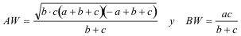 y de la figura
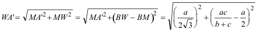 y sustituyendo en la relación del enunciado
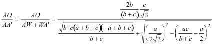 Si introducimos que A es π/3 entonces cos(π/3)=½ y así
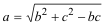 Si hacemos
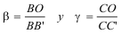 de acuerdo con el primer y segundo resultados
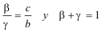 que sustituyendo a la ecuación de más arriba
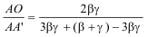 de donde
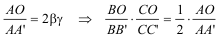 |